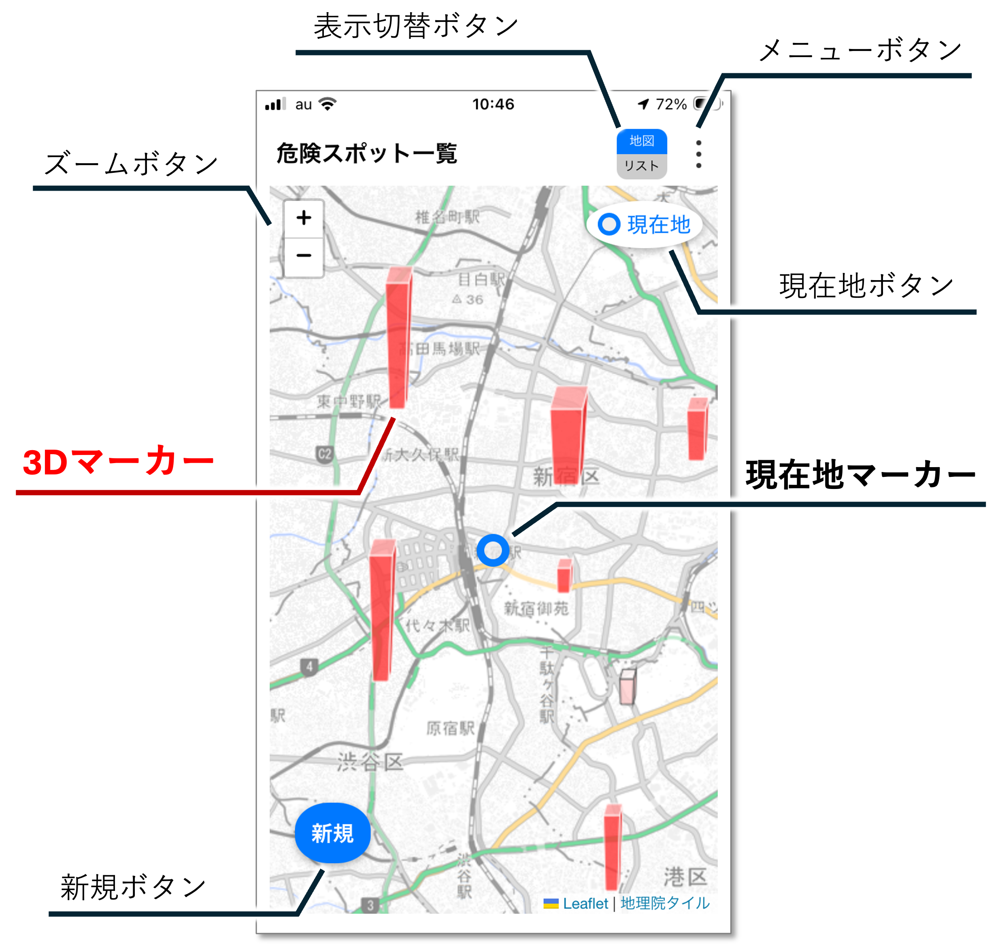
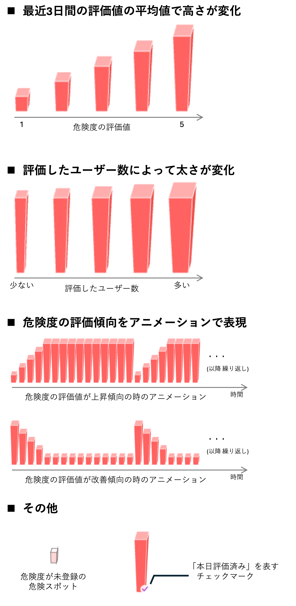
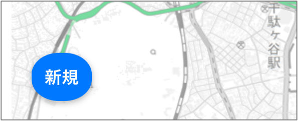
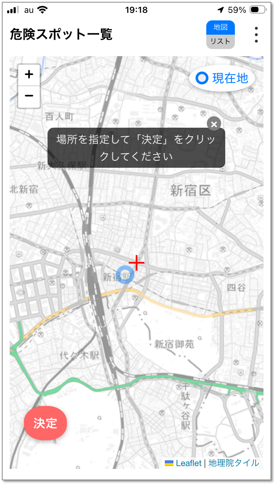
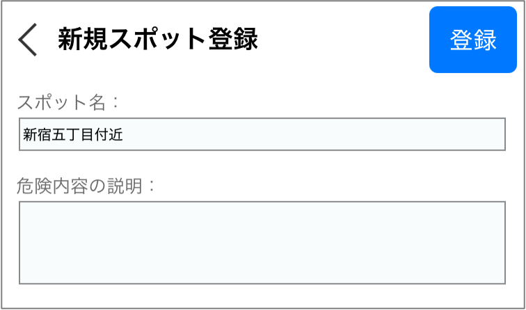
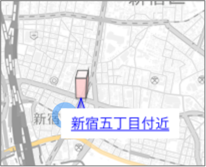
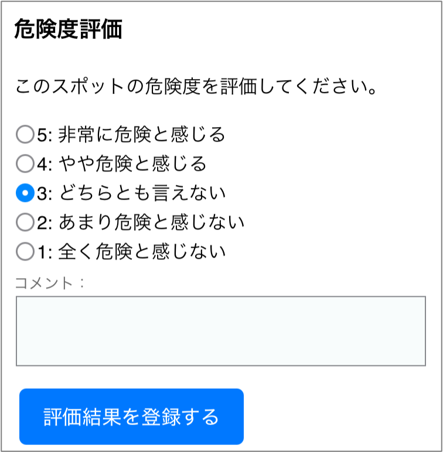
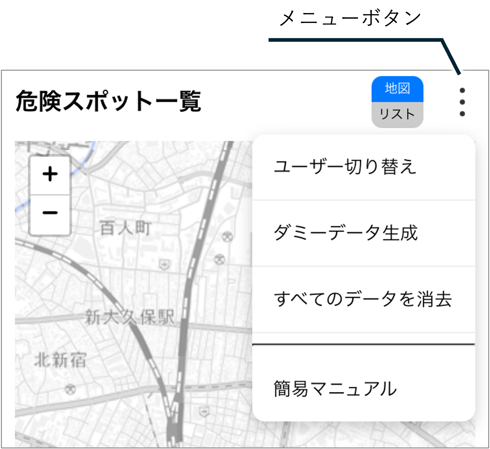
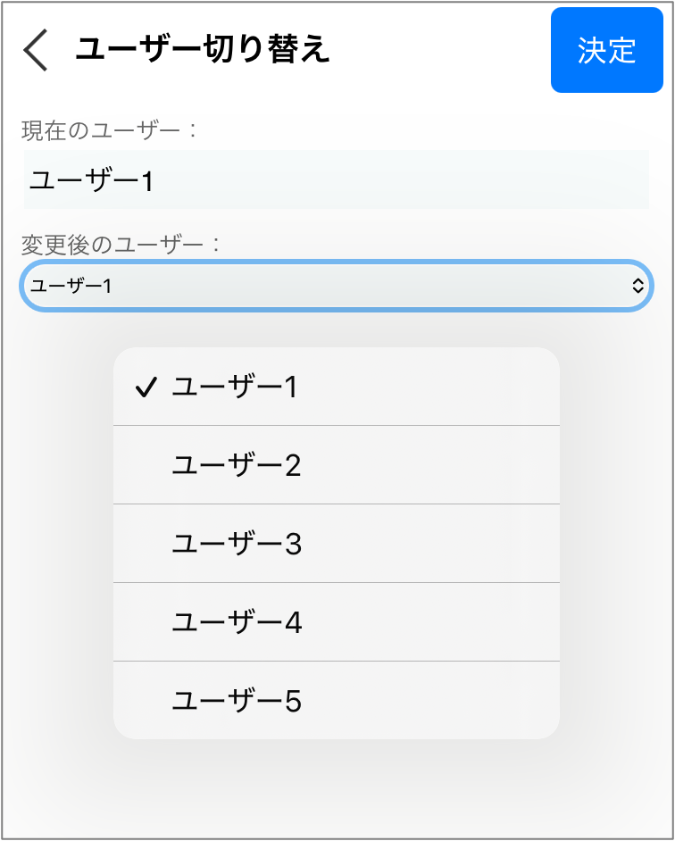
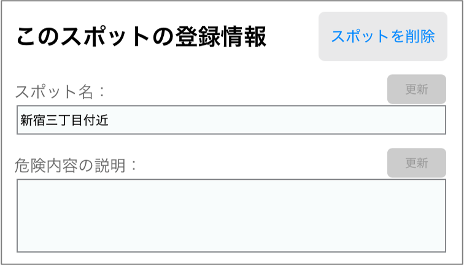

目次
アプリの概要
トップ画面の構成

| 項目 | 説明 |
|---|---|
| 3Dマーカー | 登録済みの危険スポットです。マーカーの高さは危険度の評価値を表します。 |
| 現在地マーカー | 現在地を表します。端末の位置情報が取得できる時に表示されます。 |
| 表示切り替えボタン | 地図とリストの表示切り替えができます。 |
| メニューボタン | メニュー項目が表示されます。 |
| ズームボタン | 地図を拡大/縮小することができます。 |
| 現在地ボタン | 地図の中心を現在地に移動します。端末の位置情報が取得できる時に有効です。 |
| 新規ボタン | 危険スポットを新規登録します。 |
3Dマーカーとは
3Dマーカーは、危険スポットの位置と危険度の評価状況を表します。危険度の評価状況によって、以下のように変化します。

地図データについて
国土地理院の地理院タイルを利用しています。
注意事項
位置情報や写真などのデータについて
本アプリでは、位置情報や撮影した写真などのデータを、端末内のローカルストレージ(window.localStorage)に保存しています。
ローカルストレージは、端末内に情報が残り続ける特性があるため、セキュリティ面やプライバシー保護の観点から、不要になった場合には削除することを推奨します。
データの削除方法については、データ削除の項を参照してください。
データ容量について
前述のとおり、本アプリでは端末内のローカルストレージにデータを保存しています。
ローカルストレージに保存できるデータ容量は、使用環境によっても異なりますが数MB程度です。
（このため、本アプリではデータ容量を減らすために、写真の解像度を低くしています。）
大量のデータを保存して保存容量の上限を超えた場合、新たなデータが正常に保存できなくなります。
動作の安定性を保つため、不要なデータは定期的に削除することを推奨します。
データの削除方法については、データ削除の項を参照してください。
基本操作 (スポット登録・評価)
本アプリの最も基本的な使い方は、危険スポットを登録することと、登録されたスポットの危険度を評価することです。以下に、操作手順を示します。
新規危険スポットの登録
- トップ画面左下の「新規」(新規登録ボタン)をタップ
- 地図の中央の「＋」マークを危険スポットの位置に合わせて、「決定」をタップ
- 新規スポット登録画面で必要事項を記入して、右上の「登録」をタップ



危険度評価
- 地図上の3Dマーカーをタップし、その下に表示されるポップアップをタップ
- 危険度を評価し、「評価結果を登録する」をタップ


ユーザー切り替え
前述の通り、本アプリではデータをローカルストレージに保存しているため、他のユーザーが登録したスポットの閲覧や評価などができません。複数ユーザーでの動作を擬似的に体感するため、ユーザー切り替え機能を実装しています。ユーザーの切り替え方法は以下の通りです。
- トップ画面右上のメニューボタンをタップ
- 「ユーザー切り替え」をタップ
- 「変更後のユーザー」のコンボボックスでユーザーを選択し、画面右上の「決定」をタップ


ダミーデータ作成
本アプリでは、円滑にアプリの動作テストを実施していただくため、危険スポットのデータをダミーで作成することができます。ダミーデータの作成方法は以下の通りです。
- トップ画面右上のメニューボタンをタップ
- 「ダミーデータ作成」をタップ
データ削除
以下の操作により、個別もしくは一括でデータを削除できます。
削除したデータは元に戻せませんのでご注意ください。
危険スポットの削除
危険スポットは登録したユーザーだけが削除できます。
この操作を実行すると、このスポットに登録されている写真などのデータも削除されます。
- 地図上で、対象の3Dマーカーをタップし、表示されたポップアップをタップ
- スポット詳細画面内にある「このスポットを削除」ボタンをタップ（自分が登録したスポットではない場合、このボタンは表示されません）

危険スポットの写真削除
危険スポットの写真は、その危険スポットを登録したユーザーだけが削除できます。
- 地図上で、対象の3Dマーカーをタップし、表示されたポップアップをタップ
- スポット詳細画面内にある写真をタップ
- 写真の拡大画面で、「この写真を削除」をタップ（自分が登録したスポットではない場合、このボタンは表示されません）
一括削除
すべてのデータを一括削除することができます。
- トップ画面右上のメニューボタンをタップ
- 「すべてのデータを消去」をタップ